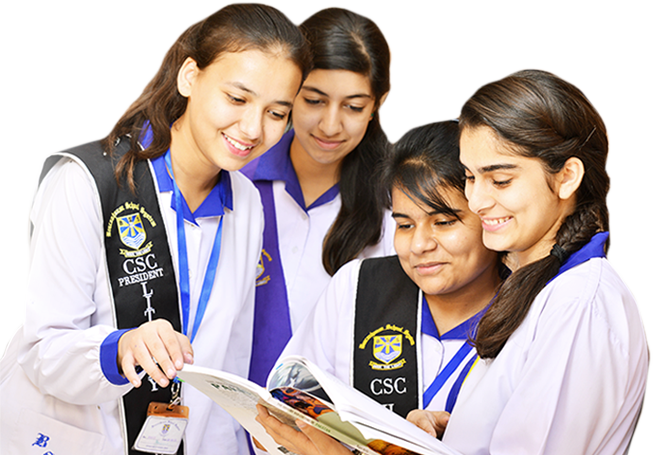

Mansehra district is located in the Khyber Pakhtunkhwa province, the educational bodies and authorities are contributing their best role in the education sector. The overall literacy rate of this region is 35.41% and is going to increase due to influence of various educational institutions.
This is a primary school and and a college present in the Chakiah Road in mansehra. It is a private school, good for beginning.
This is a famous school present in the mansehar. This is also a private school. The PEACE Group of Schools and Colleges, the best choice for the parents for their children. Where the wholesome grooming is a priority with incentives of scholarships Specifically for F.Sc Part 1 Students with Remarkable Grades in Matriculation. The most prestigious, precious, and trusted name in the field of education. The Peace Group of Schools and Colleges striving hard to make your children’s future secure. The Peace Group of Schools and Colleges, around KP has a Record of securing TOP Positions in TOP- 20 since 2010. We have BEST Teaching Faculty that helps students to Secure their Future and Mark their history in fast growing world.
TAMEER-I-WATTAN Public School & College was established in May, 2007 with the aim of providing quality education at affordable expenses. Its standards are designed to prepare the students to meet the challenges of the nation. The objective is to develop leaders and visionaries who would lead the nation to prosperity, progress and development. The eulogized spirit of nation building one great founders pledged to establish TAMEER-I-WATTAN Public Schools & Colleges, Abbottabad. The dedication the sincerity of words and deeds. the unique academic acumen of both are great educationists Malik Muhammad Saeed and Madam Halima Saeed gave spur to the rapid growth of TAMEER-I-WATTAN as an immense organisation with many sub-Institution making TAMEER-I-WATTAN Schools and Colleges. they groomed HA Malik Mohsin Saeed and Malik Ahsin Saeed on same spirit of "Tameer" who burning the mid night oils, endeavoring tirelessly astonished the people, soaring higher and higher limitless and get to do miracles academics and grooming future leaders of the nation.

The Beaconhouse School System has risen from its modest beginnings in 1975 as Les Anges Montessori Academy to become a major force in the education world. With an ever-expanding base, already established in the UK, Malaysia, the Philippines, Pakistan, the UAE, Oman, Belgium and Thailand, Beaconhouse is one of the largest private school networks in the world.
Mansehra International Public School and College (MIPS), is a private high school in Mansehra, Pakistan. It was founded in 1995 by Engr Sher Afzal Khan Swati. The school is situated, about 3400 feet above sea level, close to the Abbottabad Road in the middle of the Government Food Godown. The area where the school is situated was devastated by the 2005 Kashmir earthquake on 8 October 2005. The school is administrated by Sher Afzal Khan Swati and Faisal Khan Swati. It is divided into separate sections for boys and girls. Both the school and the college provide boarding. Currently, there are over 750 students studying in the school and 400 in the college. Of these, 45 children receive full financial support from the Institution. The faculty consists of 50 staff.
Hazara University (HU) (Urdu: جامعہ ہزارہ) is a university, situated on the crossroads of the ancient civilization of Gandhara and Ashoka and facing the Silk Route on the outskirts of Mansehra, Khyber Pakhtunkhwa, Pakistan which had been the ancient link between sub-continent, China and Central Asia. The university was founded in 2001. It was ranked No.28 in national and No.7 in provincial level as per HEC rankings, 2015.
Currently, Hazara University is having following one sub-campus: Hazara University (Battagram Campus) Previously, following Universities were also part of Hazara University as its sub-Campuses: Abbottabad University of Science and Technology (Hazara University Havelian Campus, Abbottabad) University of Haripur (Hazara University Haripur Campus)